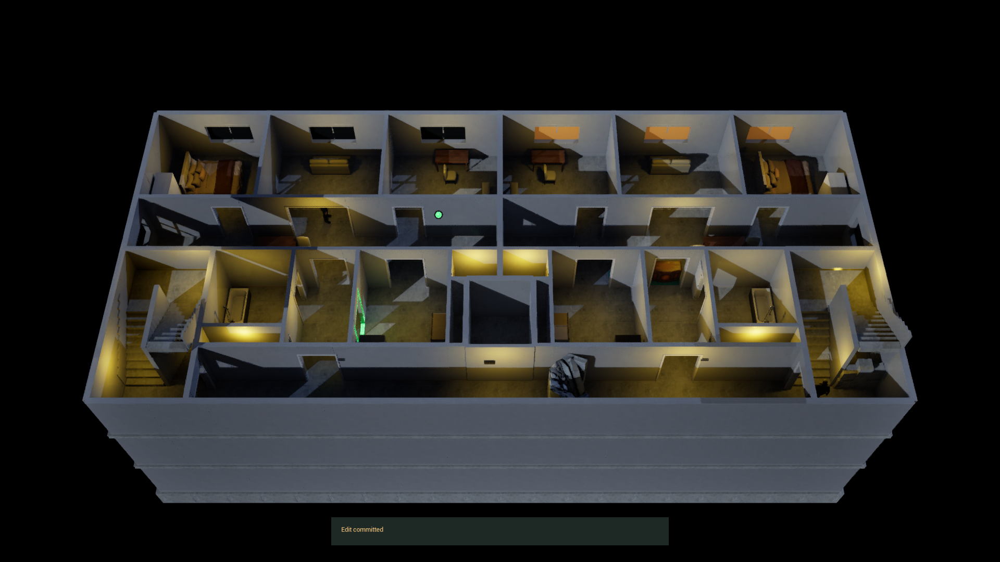
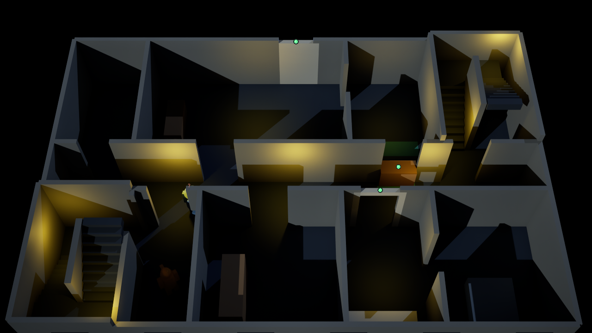
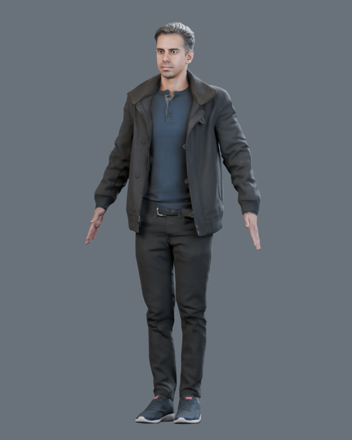
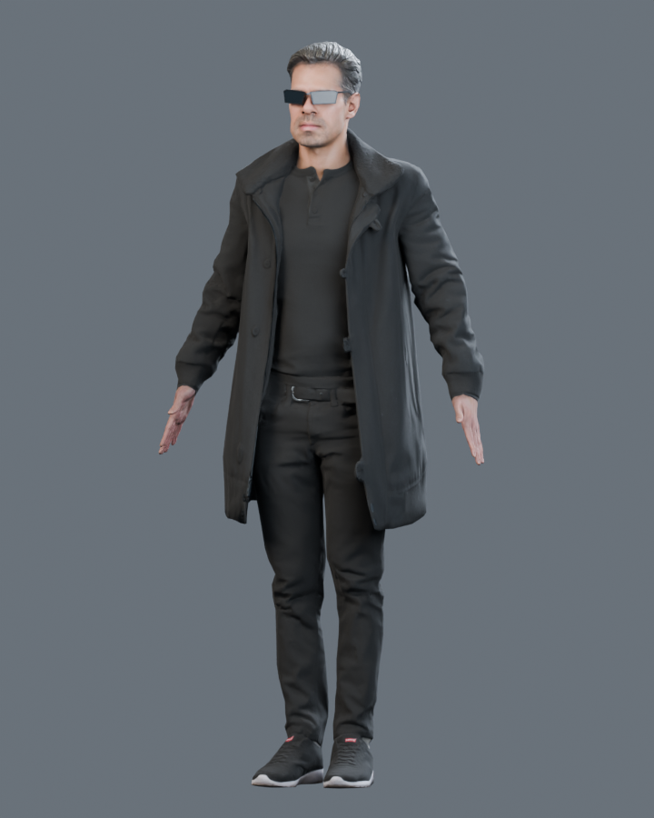
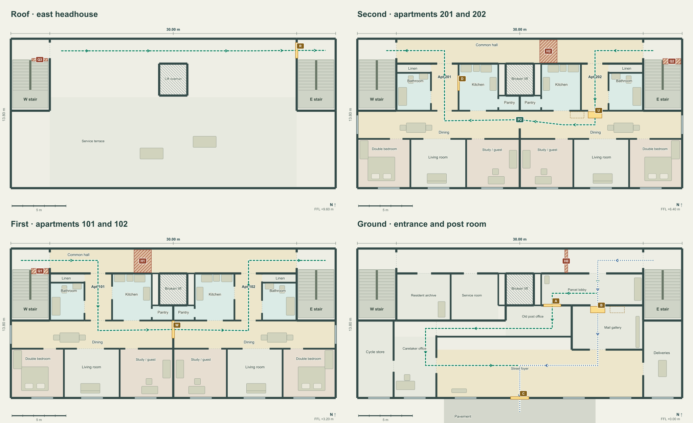
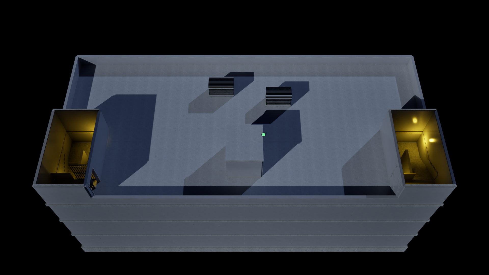
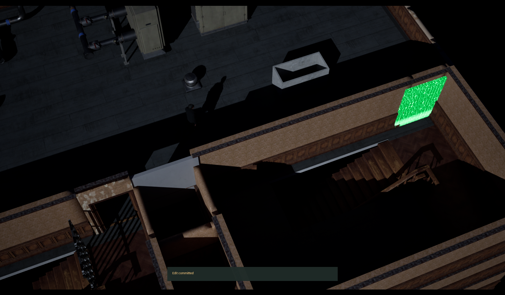
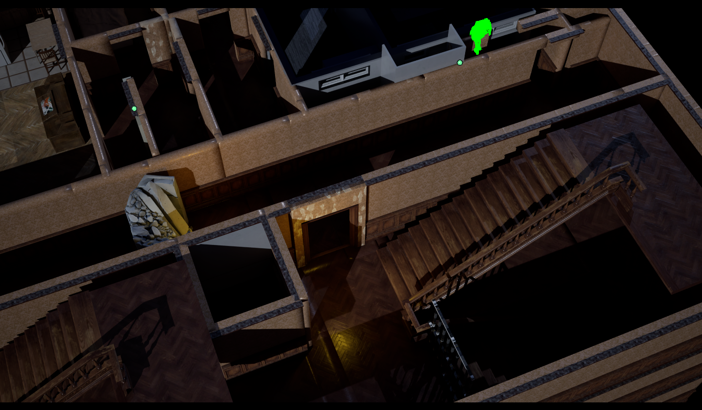
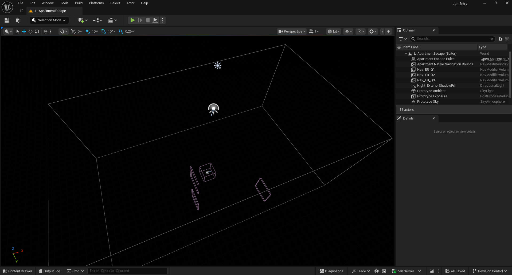
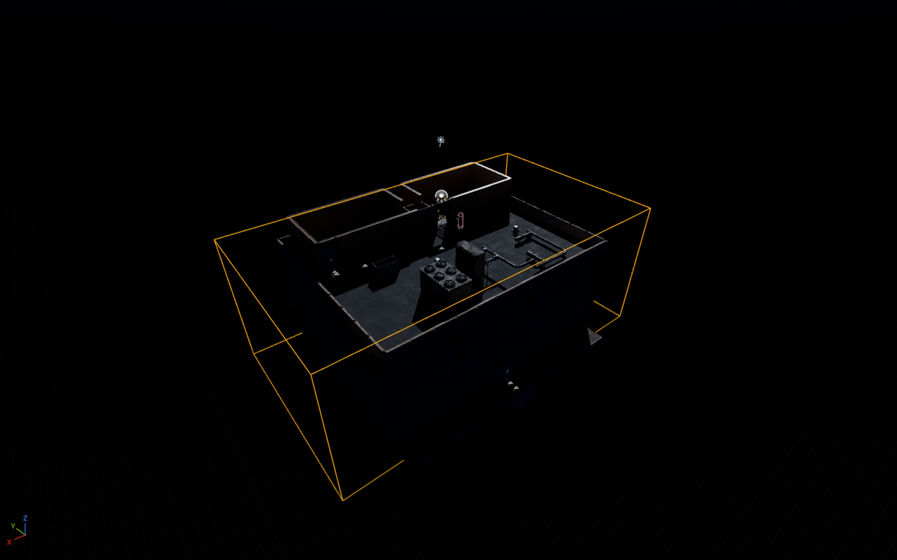

Orchestrator
Sets bounded tasks, integrates accepted work and preserves the human review checkpoints.
Epic AI MegaJam 2026 · Director’s Cut
You can change the way out.
You cannot keep every change.
An autonomous escape through a building the player can edit. The hard choice is deciding which earlier advantage to give up.
Read the four-day story
The idea
I chose an apartment escape for Director’s Cut. The player watches from above, but does not drive the protagonist. A doorway can become a wall; a sideboard can move into a recess. The person must notice the opportunity and find their own way through.
The change applies to everyone. Closing a doorway may screen the escapee and remove the route they need. Moving furniture can help a pursuer too. The camera shows the player the floor; the protagonist still has their own sight, hearing and memories.
Only two changes can stay in place. At capacity, a new edit must restore an earlier one. I kept that rule after the early playtest.
Watch the room, the person and the pursuer.
Preview and commit a real physical change.
Choose which earlier advantage returns to its original state.
“Requirement to simultaneously remove a previous change to do the current one.”My recorded enjoyable part, after finishing and restarting the early build
A direct personal playtest observation about that identified prototype.
Before the first build
The tools and blank Unreal project existed before the jam. Their original preparation dates remain in the disclosure. The theme arrived after the 11 November reveal. I passed on two written shortlists and selected my own apartment concept shortly after midnight on 12 November.
Design and sourcing plans came first. Implementation began after the official start and my separate development authorization that morning. Planning, an export, a compile and an actual packaged playthrough remain different events in this account.
Make the consequence playable
The first job was a complete roof-to-street loop: open a passage, let the escapee descend, make a later route decision, and reach an ending with Restart available. Early people, furniture and surfaces were working placeholders.
We packaged on the first day. Compilation, startup and normal progression were recorded separately. My revisions called for believable rooms, connected stairs, a free strategy camera and object-centred choices.
I required Unreal’s native navigation, path following and character movement. Game-specific decisions could choose a destination; the engine still had to walk the person there and respect real walls, furniture and treads.
A physically open route could still go unnoticed. A stopping point could obstruct the sideboard’s next position. A stair label could disagree with physical sight. Those were separate problems to observe and retest.
Keep the decision. Repair the response.
I finished and restarted the early build, reported no bugs, and kept the concept. Two behaviours frustrated me: retreating upstairs and wandering far from the stairs, and repeatedly leaving hiding to check whether the enemy was still chasing.

My direction was that a protagonist already detected by an enemy should know a chase has begun. They should not need to expose themselves just to rediscover it.
Source review found expiring danger memory and retreat scoring that favoured ever farther remembered positions. The revised rules separate awareness of pursuit from knowledge of the enemy’s location. QA also caught cover blacklisting and an old uphill evasion persisting after danger cleared.
An engine stress run in the old layout held one screened position for about 2.8 seconds, until real reacquisition and an eligible shot invalidated it. Three actual hits ended the attempt. That supplied a short shelter, combat, pause and reset observation, rather than an ordinary escape.
A later old-layout run reached the street and restarted. A second run still used the same west doorway with the gallery sideboard moved. Neither proves the two distinct lobby solutions or the original retreat findings in the redesigned building.
Realistic art, supplied assets first
I supplied an ActorCore character and asked Astra to adapt it in Blender. Astra reshaped the face, extended the jacket into a continuous coat, prepared a charcoal clothing atlas and added original angular eyewear. The body, skin and source maps retain their original lineage.


Export checks compared bones, weights, face shapes and geometry. The original downloads stayed unchanged. The Driver imported the skeleton and saved six clips retargeted through Unreal’s native tools. Older low-poly and policeman-derived hero experiments remain unused.
A new name. A building worth escaping.
I renamed the game and required two residential floors, each with two complete apartments, between lobby and roof. The Game Designer’s accepted original plan gave each home a bathroom, kitchen, pantry, dining and living space, bedroom and study. Broken halls and a lift explain the detours.

I then allowed the layout to follow superior supplied art. Source walls, full furniture assemblies and materials were adapted into the building; their creators retain credit. A bounded Rodin request supplied the selected complex rubble after the first result was rejected. Astra fitted two variants and preserved the provider PBR textures; the Driver integrated them.

An early larger-building failure exhausted Unreal’s navigation tile budget. Increasing the map’s native average-layer allowance from three to six removed those warnings and allowed one ordinary roof-to-second-floor descent. Later furnished-room failures were separate; one descent did not establish the rest of the escape.
Recordings and external services
I required fitting candidate recordings or external-service audio. All fifteen earlier procedural effects and both procedural ambience loops are excluded from final use; their tests remain history.
I supplied footstep recordings from a purchased Ultimate SFX Bundle – HD Remaster, Ovani’s Apartment Interior Ambience, and pain/death recordings from the Male Characters Bundle by Liron Peer of Mashmashu Studio. The Audio Director prepared selected variations and ordinary format, level and fade derivatives. The vocal library’s No AI Use condition remains in the rights record; the source recordings were not sent to a generation model.
Nine selected Stable Audio outputs supplied missing cues and the exterior bed within bounded authority. Two supplied alert recordings retain unresolved original-creator and exact-terms markers. A later supplied flesh-impact recording contributes to Hit; the concrete variant remains unused. Selection, native binding, actual listening and final-package verification remain separate. Final used-only credits and game/video rights checks are still being reconciled. No music or dialogue had been selected at that checkpoint; the later supplied music is recorded in Day 4.
A building that stays in the level
I wanted a realistic, abandoned building, with the supplied art put to use. I had called out backwards locomotion, a material-less protagonist and poor textures. The next tests had to answer two questions: could the person be read clearly, and could they actually get through the building?
The Driver corrected the body’s relative facing while preserving the original camera and native movement. All 40 recorded moving samples in that earlier check then aligned the anatomical front with travel. That established the visual-facing repair; it did not establish an escape.
Six character materials needed Unreal’s skeletal-mesh usage flag. The Driver enabled it without replacing their source maps. Properly framed source-pose previews showed skin, coat and angular glasses, while final gameplay appearance remained a separate check.
The imported wall crops had lost their source material masks. The Driver restored the original black vertex colours on all 68 scoped meshes, used by 197 placements, preserving their geometry, UVs and physical collision. A fresh load repeated the data checks.
A later actual game frame shows the protagonist’s filled green silhouette through the wall. Red pursuer occlusion and a clear, close view of the characters’ PBR materials remain unverified. An earlier guard-facing check also recorded 20 native samples across a full walk cycle changing from backward to forward alignment after a guard-only visual rotation. Its fresh load confirmed the saved rotation. These are pre-conversion movement observations, not a new walk test of the authored scene.
Supplied roof adaptation · into Unreal
Sol Art compared two supplied buildings and selected one roof’s upper membrane and thin edge. Astra isolated those parts, retained the natural texture scale and fitted the derivative to the existing support outline. The source creators retain their geometry and PBR credit.
The Driver imported the deck with its three native material slots and moved the selected dependencies into Production. One fitted deck replaced 108 roof placements. Fresh geometry and collision checks, plus sampled support and opening traces, passed. The later authoring conversion placed the roof directly in the saved level. The whole escape remains separate acceptance work.

From a local path to a real walk
The earlier ordinary run had descended from the roof, noticed the sideboard passage was open, then backtracked and died. Code review found nearby destinations sharing a visit cooldown; engine probes separately found a solid wall behind the sideboard and unsupported far-side points. A complete navigation path had even detoured through the roof.
The Programmer narrowed the nearby-target rules. Astra prepared a real doorway, an apartment-side commode slide and a cropped return that kept the original wallpaper proportions. The Driver also aligned three fixed grilles and added native navigation exclusions at their actual positions. Fresh checks blocked the unwanted shortcuts while retaining the legitimate stairs.
A later ordinary run crossed the sideboard passage, passed the apartment connection and descended to the first residential floor through native CharacterMovement. That is progress beyond the earlier failed attempt. The eight-minute limit still arrived without an ending or Restart, so neither lobby solution is accepted. Two focused native automation tests also passed separately and together; their four successful executions do not replace a completed escape, and canonical runs retain lifecycle warnings.

The authoring correction
My empty Editor screenshot exposed the prototype’s remaining runtime builder. I required persistent, directly editable objects, with quick layout changes made in the Editor. The Driver performed one explicit Editor conversion, then saved and reopened the actual building.
A separate test changed and saved props, materials, site and floor settings, node anchors and character settings. Those edits survived fresh reopening and Play, then were restored. Starting Play added no building mesh actors or components, and resetting the attempt reused the same two authored characters. These are the Driver’s recorded checks, not a claim that I personally ran them.


Supplied equipment, one moon
Art’s selected 14-component ventilation composition is now placed above the membrane: the connected mechanical bank, a six-fan unit and two turbine exhausts. The Driver retained the supplied joints, supports and material lineage, replacing the isolated small condenser. Native collision checks hit all 14 pieces and cleared the approach from the roof start to the maintenance entrance. This is a bounded physical route check.
Twelve window instances now use the adapted clear panes with their source frames. The extra directional light was removed, leaving one moon and modest Sky Light fill. Opaque structural surfaces retain hidden shadows during cutaway. Actual Moon transmission through lower windows and useful interior/character visibility still need current-floor gameplay views.
The converted level initially failed its canonical navigation test. Waiting inside Play did not cure a map copied before Editor navigation was ready. The Programmer made Editor readiness a fail-closed prerequisite to Play. Both focused tests then passed with their original assertions; the known lifecycle warnings remain recorded.
The latest layout change
I then required the blocked western stair to stop at the floor below the roof. The eastern stair remains the sole intended roof connection. Astra prepared a matching L-shaped cap for the old opening and landing footprint, using the existing roof materials and continuous membrane mapping.
Status at this Day 3 checkpoint. The cap and reviewed source/test changes were not yet accepted as an applied scene revision at that point. The earlier green tests belong to the previous layout. Saved/fresh closure checks, affected native tests and complete ordinary routes must run again. The fullest ordinary-route evidence remains the earlier first-floor attempt; ending, Restart, final PBR/red occlusion, audio, package and gameplay film remain open.
Make the authored scene practical
I continued editing the saved scene rather than rebuilding the level around each code change. That exposed a practical requirement: scene registration had to tolerate removed decorative pieces while protecting real gameplay dependencies. The later startup repair lets the front end open even when optional scene bindings are missing, and reports essential readiness failures safely.
The environment changed substantially. Three supplied adjacent-building meshes became seven neighboring instances. Redundant wall bodies and liners were removed; surviving joins, wallpaper and trim were fitted. The unused elevator enclosure and its fittings were removed while shared stairs and roof equipment were retained. Original modular floors filled the former shaft and completed the stair roof.
Those scene repairs have their own dated native checks. They do not establish that the later release can be completed. After I took over testing, subsequent implementation handoffs recorded builds and saves without agent gameplay acceptance.
My requested apartment interactions added entrance and bedroom seals plus a sliding desk, using the existing two-slot exchange. Larger hover dots and direct surface picking make the editable objects easier to select. Registration and floor tools were also adjusted so ordinary scene edits need less manual bookkeeping.
Supplied sound, timed to the feet
I selected separate menu and gameplay music, and three ambience recordings for the apartment, roof and street. Native copies live in Production. Managed components crossfade between contexts, with separate music and ambience levels.
My feedback on loud, repeating footsteps led to a second implementation. Animation contact markers now trigger quiet one-shot recordings at the feet, replacing the distance-based cadence. Native attenuation, occlusion and AI hearing events remain separate. The four selected movement clips were saved with contact markers; the handoff records no listening or packaged timing pass. The original recording creators retain credit. Earlier generated ambience is superseded, and homemade source audio remains excluded.
Native AI, then bounded revisions
The native perception and editable Behavior Tree migration was followed by repeated survival and navigation revisions. The later enemy direction uses walking movement and same-floor NavMesh roaming. The protagonist’s latest requested rule prioritizes a reachable route downstairs or through the exit, with roaming when that route is blocked and another attempt after a player edit.
These are implementation decisions and dated handoffs, not a new claim of successful escape. For the final packaging pass I explicitly asked to leave both characters’ AI behaviour as it was. No AI tuning was added to make the film or package appear more successful.
After midnight · 16 November
Late lighting revisions reduced ambient fill and added first-floor lights. The ending was also moved to the physical exit-doorway crossing. The late handoff adds guards on the first and ground floors, making three authored enemies. Their checkpoint bindings reuse the existing controller and presentation. A follow-up copied the original guard’s upright rotation to the two additions without moving the scene. The checkpoint format changed; a fresh New Game is the review route.
A supplied controls image now appears before a new session, including a full restart. It keeps its aspect ratio inside the requested central region and consumes the dismissal press. Continue and checkpoint retry keep their existing route. This implementation compiled; I retained the visual and input check.
The final build pass uses the saved map and its actual runtime dependencies. Candidate assets referenced only by editor previews stay out of the package. Unused experiments and entire source packs are not release content. The exact build, archive and outstanding human checks are recorded with the local review materials. Nothing has been published or submitted.
The cook is a separate boundary
The first Development package compiled and cooked without errors, but its container inventory was eight assets short: the logo, controls image, interface sounds and user mix were loaded dynamically and had not been retained. That package stayed a diagnostic artifact. The correction explicitly includes three small folders containing only the required UI and audio assets; the map and both AI implementations are unchanged.
The corrected native container audit contains all 1,019 required project packages, including those dynamic assets, with no project packages outside the runtime dependency graph. This is a content-presence check, separate from a completed escape. Source textures keep their selected resolution. The local archive exceeds the page’s browser-upload target; the official page lists tools for larger builds. No upload or submission has been made.
The final requested adjustment
While playing the fresh extracted build, I supplied a screenshot of Unreal’s yellow virtual-shadow overflow message and asked for it to disappear. The final configuration disables that specific on-screen diagnostic. It does not change the lights, shadow quality, either AI or the saved scene, and it is not a repair claim for the underlying light-budget warning.
I chose to capture the game myself. The current site therefore keeps its earlier images honestly labelled, while the final gameplay film and image selection remain my recording and review work. The local release files identify the exact Development package; nothing has been published or submitted.
The studio
I supplied the concept, revised the direction, sourced candidates and tested identified builds. Agents performed specific design, implementation, preparation and verification tasks. A source export, a code change and an in-game result receive separate credit.
Sets bounded tasks, integrates accepted work and preserves the human review checkpoints.
Turned my concept and revisions into the accepted apartment plan, rules and observable checks.
Builds game-specific C++ decisions around native movement, collision queries and saved state.
Owns every agent Unreal operation, imports and material setup, and records actual engine behaviour.
Sol prepared earlier architecture/source mappings and selected the supplied roof and ventilation composition. Astra adapted the character, source assemblies, roof and clear window panes, and fitted Rodin rubble. Sol later took over Blender preparation under the revised ownership policy; supplied geometry and maps retain their creators’ credit.
Selects supplied recordings, prepares useful derivatives and bounded external-service cues, preserving source and rights records.
Challenges claims against identified evidence and keeps partial tests separate from complete acceptance.
Prepares local fields, credits, review records and the new Development package and local review materials, with build results kept separate from gameplay acceptance.
OpenAI agents assisted production. Unreal Engine supplies native runtime and retargeting systems. Supplied ActorCore and environment art retain their original creators’ credit. Blender preparation, Rodin’s selected rubble and Stable Audio’s selected output are distinct contributions; rejected experiments and unused services receive no final-use credit. Exact shipped assets, required attribution and game/promotional-media rights remain part of final release review.
The evidence
The images distinguish the earlier empty Editor, the saved building before Play, and genuine Editor-play views. Later scene revisions are described below with their original verification limits. None of these historical images stands in for a completed escape in the new package.
I completed and restarted the early prototype. My feedback kept the concept and the simultaneous two-change exchange.
Before the authored-scene conversion, all 40 recorded protagonist moving samples aligned the anatomical front with travel after the visual correction. The separate guard walk check also predates conversion; no new scene-wide locomotion pass is implied.
Six skeletal-usage flags and all 68 scoped wall-colour masks were corrected. Fresh checks preserve their source assignments and geometry. Source-pose previews help verify materials; final game and package appearance remain open.
Fresh reopening and saved owner-style edits passed; Play created no new building meshes and reset reused the two authored characters. The connected rooftop equipment, clear window instances and one-moon setup are saved. Final lighting and the new stair revision remain open.
After the doorway and fixed-grille repairs, a normal-action run crossed the sideboard passage and the apartment connection, then descended to the first residential floor. The bounded attempt ended without an ending or Restart.
After the navigation-lifecycle correction, both focused cases passed on the saved converted level, with the known canonical warnings retained. Those results precede the new western-stair removal; revised architecture and full play require fresh tests.
Pre-jam tools and the blank project retain their real dates. I confirmed purchased candidates; exact item terms and required game/video credits still need final review. Supplied bodies, maps, furniture and architecture are credited to their sources; agent adaptations preserve that lineage.
The abandoned lift was removed, while the shared stairs and HVAC stayed. Later requests added apartment seals, a sliding desk and two more authored guards. Free-form destruction, dynamic debris and extended cinematics remain cut. The two-change exchange remains the central constraint.
Earlier shelter and route observations belong to their earlier layouts. Full pursuit behaviour, useful stair return, current physical routes, character/wall/roof appearance, replacement audio, listening and fresh-package tests remain open. No numerical test establishes enjoyment.
Release materials
The local release materials include the game package, credits and review notes. Game publication and submission require separate approval of those files.
What I learned
The part I liked was the exchange: a new advantage costs an old one. That stays. I asked for clearer behaviour between edits and a realistic building worth escaping.
The building is now saved and editable before Play, and the roof has its supplied ventilation composition. The last production days also changed the apartment openings, removed the unused lift and added guards. The final packaging pass preserves the latest character behaviour. Build success, listening and a complete human playthrough remain separate results.
Return to the beginning